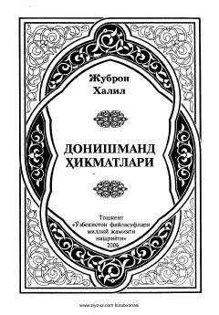

DHBuyuk arab shoiri Jubron Halilning hikmat va falsafaga boy asarlari to'plami.
Bu kitob buyuk arab shoiri Jubron Halil Jubronning 'Donishmand hikmatlari' badeasi hamda 'Go'zallik', 'Ruhlar suhbati', 'Tun qasidasi', 'Bo'ronda qolgan qush' kabi mansuralarini o'z ichiga oladi. Asar Maqkam Andijoniy tomonidan arab tilidan o'zbek tiliga tarjima qilingan va 2006-yilda Toshkentda nashr etilgan. Jubronning falsafiy-lirik asarlari go'zallik, haqiqat va insoniyatga muhabbat mavzularini qamrab oladi.